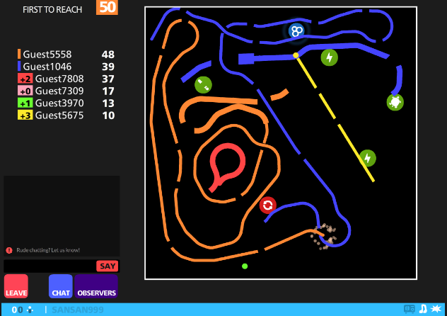
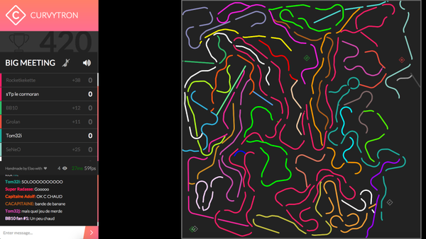
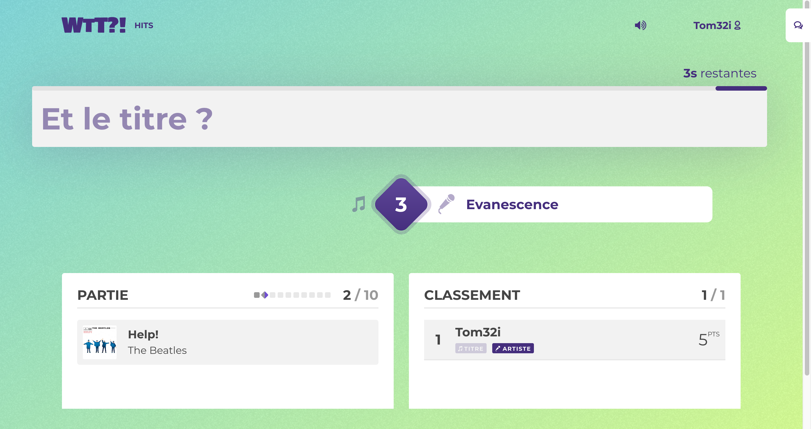
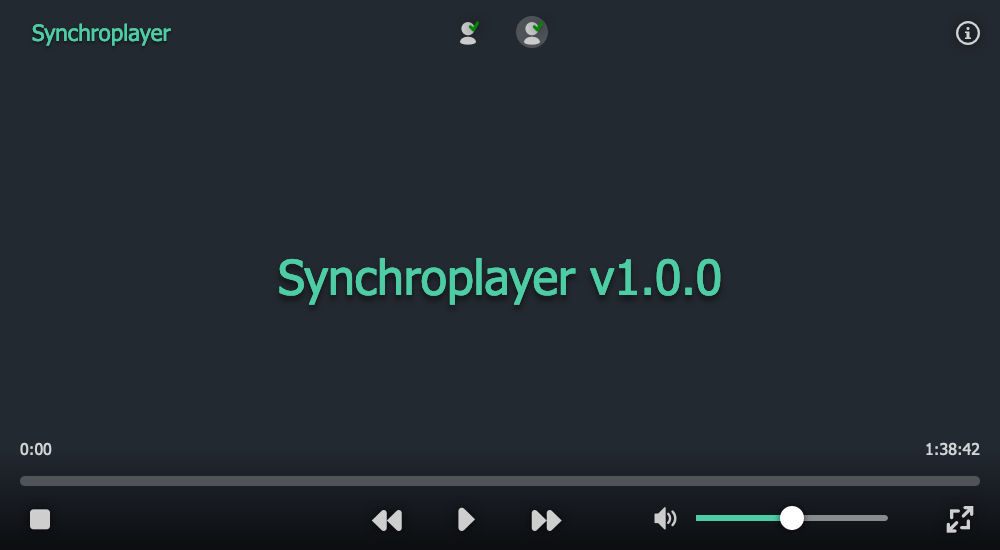
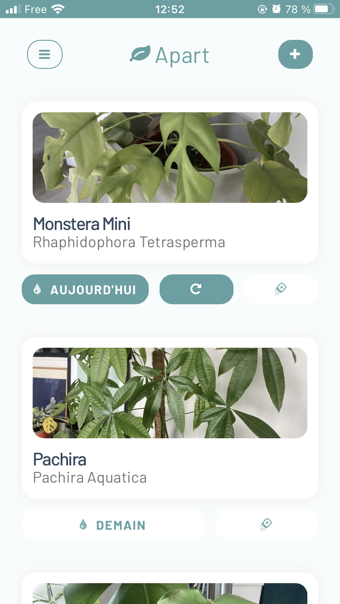

Comment j'ai sorti mes side-projects ?
Hello 👋
L'intêret ?
- Apprendre
- Innover
- S'amuser
- Visibilité
La malediction 😱

Qu'est-ce que les projets qui sortent ont de plus ?
Chapitre 1 : passer la prod
Curve Fever
Curvytron
Massive Music Quizz

What the Tune?!
Un motif qui se répète ? 🤔
Le plagia !
Mon side-project
résoud
mon problème.
Synchroplayer
Garden
Game-o-scope

L'idée est qu'il vous soit utile à vous
... à condition de le sortir.
Sortez le tôt, pas parfait.
Cercle vertueux d'utilisation
Chapitre 2: à la rencontre des utilisateurs
Garder ça en tête même une fois le projet sorti
Je ne prends pas en compte toutes les demandes
C'est pas grave si ça tombe
Attentions à l'effet instagram
Ma recette du side-project heureux :
- Être utile
- Sortir tôt
- Objectifs clairs